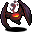

黒曜石のコウモリ Obsidian bat
英語版 CrawlWiki の記事「Obsidian bat」(0.32 向け、2024-08-31 版)の翻訳です。原文の著者は編集履歴をご覧ください。
この記事は 0.32 の時点の内容で、最新の 0.34 とは違うところがあるかもしれません。
| 黒曜石のコウモリ b  | |
|---|---|
| HP | 28-57 |
| HD | 9 |
| XP | 751 |
| 速度 | 30 |
| AC | 13 |
| EV | 13 |
| 意志力 | 20 |
| 攻撃1 | 21(噛みつき: 地獄の狩り)
|
| 耐性 | rF++ rPois+++ rN+++ rDrown rMiasma rTorm |
| 弱点 | なし |
| 生息地 | 陸上 |
| 知能 | 動物並み |
| 使用 | 何も使わない |
| 分類 | 非生物 |
| 体格 | 極小 |
| 種類 | コウモリ、黒曜石のコウモリ |
| フラグ | 飛行 霊視 盲目化無効 コウモリのように飛び回る 話す 邪悪 呼吸しない |

| 地獄の深淵から掘り出された、顔のない石のコウモリだ。その後には悪魔の獣たちが狩りをしながら続いてくる。 |
基本情報
黒曜石のコウモリは地獄をテーマにした素早いコウモリで、オークの坑道に出る。攻撃が当たると 66% の確率でヘルハウンドかヘルラットを呼び出す。同時に呼び出せるのは 4 体までだ。
小技
- 黒曜石のコウモリはコウモリのように飛び回るので、プレイヤーが行動するあいだに殴って近接攻撃の届かない所へ離れてしまう。被弾を減らすには、こちらから近づくのではなく離れるのがひとつの手だ。そうすれば相手はターンの大半を近寄るのに使い、結局あなたの隣で止まることもある。
- 通路で戦えば動きを封じられ、呼び出された手下に群がられることもない。あなたと別のモンスター(呼び出された手下でもいい)のあいだや、行き止まりにコウモリを閉じ込めて、動けなくしてしまうこともできる。